CODING AGENTS AS PIXEL WORLD MODELS
traex/DeepSeek-V4.1-Flash · 0056
点击播放 · 原生 RGB 像素
此结果可播放，但该运行尚未通过最终提交审核。页面展示不代表评测通过。
逐轮保存的候选
回放视频、检查图与代码变化。
每份候选均可单独播放。实际图片检查记录在下方工具轨迹中。
候选 01播放与检查图
点击播放 · 原生 RGB 像素

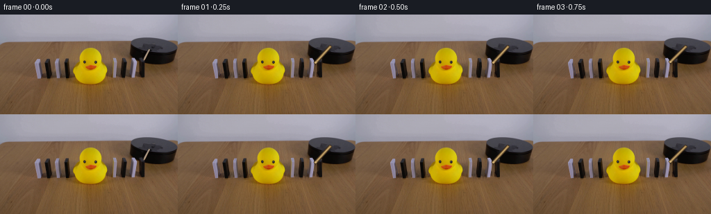
展开代码变化
--- 上一保存版本
+++ 本次保存版本
@@ -0,0 +1,240 @@
+from pathlib import Path
+import math
+
+import cv2
+import numpy as np
+from PIL import Image
+
+import artifact_io
+
+
+CASE_DIR = Path(__file__).resolve().parent
+WIDTH, HEIGHT = 256, 144
+FRAME_COUNT = 20
+FPS = 4
+
+
+# Quads follow the visible faces in the photographed first frame.
+DOMINOES = [
+ {
+ "name": "left_white_a",
+ "quad": [(50, 64), (57, 63), (58, 92), (50, 93)],
+ "pivot": (58, 92),
+ "moving": False,
+ },
+ {
+ "name": "left_black_a",
+ "quad": [(63, 63), (74, 62), (76, 94), (65, 94)],
+ "pivot": (76, 94),
+ "moving": False,
+ },
+ {
+ "name": "left_white_b",
+ "quad": [(80, 63), (85, 62), (87, 92), (80, 93)],
+ "pivot": (87, 92),
+ "moving": False,
+ },
+ {
+ "name": "left_black_b",
+ "quad": [(92, 63), (100, 62), (102, 94), (94, 94)],
+ "pivot": (102, 94),
+ "moving": False,
+ },
+ {
+ "name": "right_white_a",
+ "quad": [(163, 63), (168, 62), (169, 92), (162, 93)],
+ "pivot": (169, 92),
+ "moving": True,
+ "start": 11,
+ },
+ {
+ "name": "right_black_a",
+ "quad": [(173, 63), (181, 62), (183, 94), (174, 94)],
+ "pivot": (183, 94),
+ "moving": True,
+ "start": 9,
+ },
+ {
+ "name": "right_white_b",
+ "quad": [(190, 63), (196, 62), (197, 93), (189, 93)],
+ "pivot": (197, 93),
+ "moving": True,
+ "start": 7,
+ },
+ {
+ "name": "right_black_b",
+ "quad": [(199, 63), (207, 62), (208, 94), (200, 94)],
+ "pivot": (208, 94),
+ "moving": True,
+ "start": 5,
+ },
+]
+
+
+def polygon_mask(shape, points, scale=4):
+ height, width = shape[:2]
+ mask = np.zeros((height * scale, width * scale), dtype=np.uint8)
+ pts = np.asarray(points, dtype=np.float64) * scale
+ cv2.fillPoly(mask, [np.round(pts).astype(np.int32)], 255, lineType=cv2.LINE_AA)
+ mask = cv2.resize(mask, (width, height), interpolation=cv2.INTER_AREA)
+ return mask
+
+
+def make_sprite(image, points):
+ points_array = np.asarray(points, dtype=np.float64)
+ x0 = max(0, int(math.floor(points_array[:, 0].min())) - 3)
+ y0 = max(0, int(math.floor(points_array[:, 1].min())) - 3)
+ x1 = min(WIDTH, int(math.ceil(points_array[:, 0].max())) + 4)
+ y1 = min(HEIGHT, int(math.ceil(points_array[:, 1].max())) + 4)
+
+ local_points = points_array - np.array([x0, y0])
+ alpha = polygon_mask((y1 - y0, x1 - x0), local_points, scale=8)
+ rgb = image[y0:y1, x0:x1].copy()
+ return {
+ "rgb": rgb,
+ "alpha": alpha,
+ "offset": (x0, y0),
+ }
+
+
+def build_background(image, sprites):
+ mask = np.zeros((HEIGHT, WIDTH), dtype=np.uint8)
+ for item in DOMINOES:
+ points = np.asarray(item["quad"], dtype=np.float64)
+ # Include the small contact shadow at the foot of each block.
+ points[:, 1] += np.linspace(0.0, 2.0, len(points))
+ mask = np.maximum(mask, polygon_mask(mask.shape, points, scale=4))
+
+ # The exposed wooden control rod is redrawn every frame.
+ rod_mask = np.zeros_like(mask)
+ cv2.line(rod_mask, (197, 70), (219, 46), 255, 6, cv2.LINE_AA)
+ mask = np.maximum(mask, rod_mask)
+ mask = cv2.dilate(mask, np.ones((3, 3), np.uint8), iterations=1)
+ return cv2.inpaint(image, mask, 6, cv2.INPAINT_TELEA)
+
+
+def fall_angle(frame_index, start):
+ if frame_index < start:
+ return 0.0
+ t = min(1.0, (frame_index - start) / 8.0)
+ # The motion accelerates under gravity, then settles against the pile.
+ return 73.0 * min(1.0, 0.18 * t + 0.82 * t * t)
+
+
+def warp_sprite(frame, sprite, pivot, angle, shadow=False):
+ x0, y0 = sprite["offset"]
+ local_pivot = (pivot[0] - x0, pivot[1] - y0)
+ matrix = cv2.getRotationMatrix2D(local_pivot, angle, 1.0)
+ matrix[0, 2] += x0
+ matrix[1, 2] += y0
+ if shadow:
+ matrix[0, 2] += 2.5
+ matrix[1, 2] += 2.0
+
+ warped_rgb = cv2.warpAffine(
+ sprite["rgb"],
+ matrix,
+ (WIDTH, HEIGHT),
+ flags=cv2.INTER_LINEAR,
+ borderMode=cv2.BORDER_CONSTANT,
+ borderValue=(0, 0, 0),
+ )
+ warped_alpha = cv2.warpAffine(
+ sprite["alpha"],
+ matrix,
+ (WIDTH, HEIGHT),
+ flags=cv2.INTER_LINEAR,
+ borderMode=cv2.BORDER_CONSTANT,
+ borderValue=0,
+ )
+
+ if shadow:
+ alpha = cv2.GaussianBlur(warped_alpha, (0, 0), 2.2).astype(np.float32) / 255.0
+ alpha *= 0.18
+ frame[:] = (
+ frame.astype(np.float32) * (1.0 - alpha[:, :, None])
+ + np.array([24, 17, 11], dtype=np.float32) * alpha[:, :, None]
+ ).clip(0, 255).astype(np.uint8)
+ return
+
+ alpha = warped_alpha.astype(np.float32)[:, :, None] / 255.0
+ frame[:] = (
+ frame.astype(np.float32) * (1.0 - alpha)
+ + warped_rgb.astype(np.float32) * alpha
+ ).clip(0, 255).astype(np.uint8)
+
+
+def stick_angle(frame_index):
+ if frame_index <= 1:
+ return 0.0
+ if frame_index >= 8:
+ return 18.0
+ t = (frame_index - 1) / 7.0
+ return 18.0 * (0.18 * t + 0.82 * t * t)
+
+
+def draw_stick(frame, extra_degrees):
+ pivot = np.array([219.0, 46.0], dtype=np.float64)
+ initial_tip = np.array([198.0, 69.0], dtype=np.float64)
+ vector = initial_tip - pivot
+ angle = math.radians(extra_degrees)
+ rotation = np.array(
+ [[math.cos(angle), -math.sin(angle)], [math.sin(angle), math.cos(angle)]]
+ )
+ tip = pivot + rotation @ vector
+
+ p0 = tuple(np.round(pivot).astype(int))
+ p1 = tuple(np.round(tip).astype(int))
+ # Dark edge, warm body, and narrow top highlight match the original dowel.
+ cv2.line(frame, p0, p1, (58, 42, 27), 4, cv2.LINE_AA)
+ cv2.line(frame, p0, p1, (139, 111, 68), 2, cv2.LINE_AA)
+ cv2.line(frame, p0, p1, (202, 169, 111), 1, cv2.LINE_AA)
+ cv2.circle(frame, p1, 1, (207, 174, 117), -1, cv2.LINE_AA)
+
+
+def generate_frames():
+ source = np.asarray(Image.open(CASE_DIR / "first_frame.png").convert("RGB")).copy()
+ sprites = {
+ item["name"]: make_sprite(source, item["quad"])
+ for item in DOMINOES
+ }
+ background = build_background(source, sprites)
+
+ frames = np.empty((FRAME_COUNT, HEIGHT, WIDTH, 3), dtype=np.uint8)
+ frames[0] = source
+ for frame_index in range(1, FRAME_COUNT):
+ frame = background.copy()
+
+ # Contact shadows are composited before the rigid pieces.
+ for item in DOMINOES:
+ if not item["moving"]:
+ continue
+ angle = fall_angle(frame_index, item["start"])
+ if angle > 0.2:
+ warp_sprite(frame, sprites[item["name"]], item["pivot"], angle, shadow=True)
+
+ # The stationary side stays on the table as the right-hand line collapses.
+ for item in DOMINOES:
+ if not item["moving"]:
+ warp_sprite(frame, sprites[item["name"]], item["pivot"], 0.0)
+
+ # Rightmost pieces are drawn last so each one lies over the neighbor it hits.
+ for item in DOMINOES:
+ if not item["moving"]:
+ continue
+ angle = fall_angle(frame_index, item["start"])
+ warp_sprite(frame, sprites[item["name"]], item["pivot"], angle)
+
+ draw_stick(frame, stick_angle(frame_index))
+ frames[frame_index] = frame
+ return frames, background
+
+
+def main():
+ frames, background = generate_frames()
+ Image.fromarray(background).save(CASE_DIR / ".tmp" / "background.png")
+ artifact_io.save(frames, CASE_DIR)
+
+
+if __name__ == "__main__":
+ main()
候选 02播放与检查图
点击播放 · 原生 RGB 像素

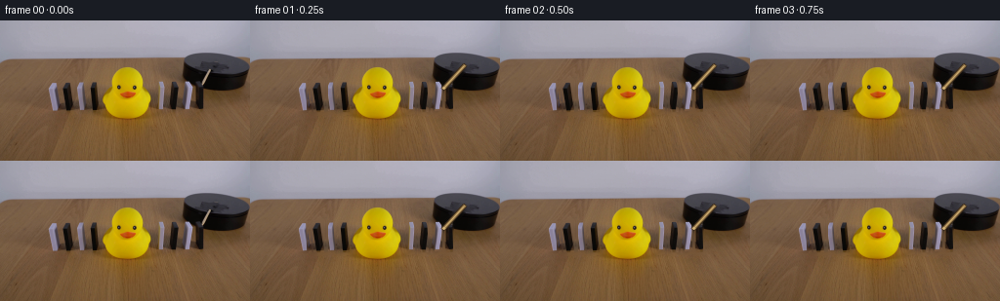
展开代码变化
--- 上一保存版本
+++ 本次保存版本
@@ -43,30 +43,30 @@
{
"name": "right_white_a",
"quad": [(163, 63), (168, 62), (169, 92), (162, 93)],
- "pivot": (169, 92),
- "moving": True,
- "start": 11,
+ "pivot": (162, 93),
+ "moving": True,
+ "start": 7,
},
{
"name": "right_black_a",
"quad": [(173, 63), (181, 62), (183, 94), (174, 94)],
- "pivot": (183, 94),
- "moving": True,
- "start": 9,
+ "pivot": (173, 94),
+ "moving": True,
+ "start": 6,
},
{
"name": "right_white_b",
"quad": [(190, 63), (196, 62), (197, 93), (189, 93)],
- "pivot": (197, 93),
- "moving": True,
- "start": 7,
+ "pivot": (189, 93),
+ "moving": True,
+ "start": 5,
},
{
"name": "right_black_b",
"quad": [(199, 63), (207, 62), (208, 94), (200, 94)],
- "pivot": (208, 94),
- "moving": True,
- "start": 5,
+ "pivot": (199, 94),
+ "moving": True,
+ "start": 4,
},
]
@@ -97,7 +97,7 @@
}
-def build_background(image, sprites):
+def build_background(image, sprites, include_rod=True):
mask = np.zeros((HEIGHT, WIDTH), dtype=np.uint8)
for item in DOMINOES:
points = np.asarray(item["quad"], dtype=np.float64)
@@ -105,10 +105,11 @@
points[:, 1] += np.linspace(0.0, 2.0, len(points))
mask = np.maximum(mask, polygon_mask(mask.shape, points, scale=4))
- # The exposed wooden control rod is redrawn every frame.
- rod_mask = np.zeros_like(mask)
- cv2.line(rod_mask, (197, 70), (219, 46), 255, 6, cv2.LINE_AA)
- mask = np.maximum(mask, rod_mask)
+ if include_rod:
+ # The exposed wooden control rod is redrawn every frame.
+ rod_mask = np.zeros_like(mask)
+ cv2.line(rod_mask, (197, 70), (219, 46), 255, 6, cv2.LINE_AA)
+ mask = np.maximum(mask, rod_mask)
mask = cv2.dilate(mask, np.ones((3, 3), np.uint8), iterations=1)
return cv2.inpaint(image, mask, 6, cv2.INPAINT_TELEA)
@@ -116,21 +117,17 @@
def fall_angle(frame_index, start):
if frame_index < start:
return 0.0
- t = min(1.0, (frame_index - start) / 8.0)
+ t = min(1.0, (frame_index - start) / 6.0)
# The motion accelerates under gravity, then settles against the pile.
- return 73.0 * min(1.0, 0.18 * t + 0.82 * t * t)
-
-
-def warp_sprite(frame, sprite, pivot, angle, shadow=False):
+ return 74.0 * min(1.0, 0.16 * t + 0.84 * t * t)
+
+
+def warp_sprite(frame, sprite, pivot, angle):
x0, y0 = sprite["offset"]
local_pivot = (pivot[0] - x0, pivot[1] - y0)
matrix = cv2.getRotationMatrix2D(local_pivot, angle, 1.0)
matrix[0, 2] += x0
matrix[1, 2] += y0
- if shadow:
- matrix[0, 2] += 2.5
- matrix[1, 2] += 2.0
-
warped_rgb = cv2.warpAffine(
sprite["rgb"],
matrix,
@@ -148,15 +145,6 @@
borderValue=0,
)
- if shadow:
- alpha = cv2.GaussianBlur(warped_alpha, (0, 0), 2.2).astype(np.float32) / 255.0
- alpha *= 0.18
- frame[:] = (
- frame.astype(np.float32) * (1.0 - alpha[:, :, None])
- + np.array([24, 17, 11], dtype=np.float32) * alpha[:, :, None]
- ).clip(0, 255).astype(np.uint8)
- return
-
alpha = warped_alpha.astype(np.float32)[:, :, None] / 255.0
frame[:] = (
frame.astype(np.float32) * (1.0 - alpha)
@@ -165,12 +153,12 @@
def stick_angle(frame_index):
- if frame_index <= 1:
+ if frame_index <= 2:
return 0.0
- if frame_index >= 8:
- return 18.0
- t = (frame_index - 1) / 7.0
- return 18.0 * (0.18 * t + 0.82 * t * t)
+ if frame_index >= 7:
+ return 14.0
+ t = (frame_index - 2) / 5.0
+ return 14.0 * (0.16 * t + 0.84 * t * t)
def draw_stick(frame, extra_degrees):
@@ -199,30 +187,20 @@
for item in DOMINOES
}
background = build_background(source, sprites)
+ rod_background = build_background(source, sprites, include_rod=True)
frames = np.empty((FRAME_COUNT, HEIGHT, WIDTH, 3), dtype=np.uint8)
frames[0] = source
for frame_index in range(1, FRAME_COUNT):
frame = background.copy()
- # Contact shadows are composited before the rigid pieces.
- for item in DOMINOES:
- if not item["moving"]:
- continue
- angle = fall_angle(frame_index, item["start"])
- if angle > 0.2:
- warp_sprite(frame, sprites[item["name"]], item["pivot"], angle, shadow=True)
-
- # The stationary side stays on the table as the right-hand line collapses.
- for item in DOMINOES:
- if not item["moving"]:
- warp_sprite(frame, sprites[item["name"]], item["pivot"], 0.0)
-
- # Rightmost pieces are drawn last so each one lies over the neighbor it hits.
- for item in DOMINOES:
- if not item["moving"]:
- continue
- angle = fall_angle(frame_index, item["start"])
+ # Rightmost pieces fall first and lie beneath the pieces that follow.
+ for item in reversed(DOMINOES):
+ angle = (
+ fall_angle(frame_index, item["start"])
+ if item["moving"]
+ else 0.0
+ )
warp_sprite(frame, sprites[item["name"]], item["pivot"], angle)
draw_stick(frame, stick_angle(frame_index))
可观测工具轨迹
实际执行的命令与返回图片。
命令 1exit 0
/bin/bash -c "pwd && rg --files -g 'prompt.txt' -g 'GENERATION_RULES.md' -g '"'!*.png'"' -g '"'!*.mp4'"' | sed -n '1,120p'"
命令 2exit 0
/bin/bash -c "ls -la && find . -maxdepth 2 -type f -printf '%p %s bytes\\n' | sort | sed -n '1,160p'"
命令 3exit 0
/bin/bash -c 'cat prompt.txt'
命令 4exit 0
/bin/bash -c 'cat GENERATION_RULES.md'
命令 5exit 0
/bin/bash -c "sed -n '1,240p' artifact_io.py && sed -n '1,220p' player_template.html"
命令 6exit 0
/bin/bash -c "file first_frame.png; command -v ffmpeg; command -v python3; python3 - <<'PY'
from PIL import Image
im=Image.open('first_frame.png')
print(im.size, im.mode)
PY"命令 7exit 0
/bin/bash -c "python3 - <<'PY'
import numpy as np
from PIL import Image
im=np.asarray(Image.open('first_frame.png'))
# Print coarse local minima/segments for domino columns based on dark/bright contrast against table in lower center
for x in range(0,256,4):
p=im[70:125,x].mean(1)
if p.min()<70:
print(x, 'min', int(p.min()), 'at', int(p.argmin()+70), 'mean', int(p.mean()))
PY"命令 8exit 0
/bin/bash -c "python3 - <<'PY'
from PIL import Image
im=Image.open('first_frame.png')
im.crop((35,35,256,115)).resize((884,320), Image.Resampling.NEAREST).save('.tmp/crop_scene_nearest.png')
im.crop((175,25,256,85)).resize((648,480), Image.Resampling.NEAREST).save('.tmp/crop_rig_nearest.png')
PY"命令 9exit 0
/bin/bash -c "python3 - <<'PY' mods=['cv2','scipy','skimage','numpy','PIL'] for m in mods: try: x=__import__(m); print(m, getattr(x,'__version__','ok')) except Exception as e: print(m, 'NO', e) PY"
命令 10exit 0
/bin/bash -c "python3 - <<'PY'
from PIL import Image
import numpy as np
im=np.array(Image.open('first_frame.png'))
# save enlarged image sections for accurate geometry inspection
for name,box in [('left',(35,52,115,112)),('duck',(92,38,158,115)),('right',(155,51,208,112)),('full',(0,0,256,144))]:
crop=Image.fromarray(im[box[1]:box[3],box[0]:box[2]])
crop.resize((crop.width*6,crop.height*6), Image.Resampling.NEAREST).save('.tmp/'+name+'.png')
PY"命令 11exit 0
/bin/bash -c "python3 - <<'PY'
import cv2, numpy as np
im=cv2.imread('first_frame.png')
hsv=cv2.cvtColor(im,cv2.COLOR_BGR2HSV)
gray=cv2.cvtColor(im,cv2.COLOR_BGR2GRAY)
# candidates based on black/white saturation and brightness
for name,m in [('black',(gray<65).astype(np.uint8)*255),('white',((gray>145)&(hsv[:,:,1]<75)).astype(np.uint8)*255)]:
m[:55]=0;m[115:]=0;m[:,:30]=0;m[:,215:]=0
n,lab,stats,cents=cv2.connectedComponentsWithStats(m)
print(name)
for i in range(1,n):
x,y,w,h,a=stats[i]
if a>=15: print(' ',i,(x,y,w,h,a))
PY"命令 12exit 0
/bin/bash -c "python3 - <<'PY'
from PIL import Image
import numpy as np
im=np.array(Image.open('first_frame.png'))
# print exact colors and grayscale around platform stick region at 1px grid
for y in range(40,78,2):
s=''
for x in range(190,242,2):
r,g,b=im[y,x]
if r>80 and r>g*1.05 and g>b*1.1: c='S' # tan
elif max(r,g,b)<40:c='K'
elif max(r,g,b)<75:c='k'
elif max(r,g,b)>150:c='.'
else:c='-'
s+=c
print(f'{y:3d} {s}')
PY"命令 13exit 0
/bin/bash -c "python3 - <<'PY'
import cv2, numpy as np
im=cv2.imread('first_frame.png')
hsv=cv2.cvtColor(im,cv2.COLOR_BGR2HSV)
# show segmentation by colors into simple mask montage
masks=[]
# likely yellow duck H around 22? inspect pixels
for p in [(132,75),(125,65),(143,65),(135,100),(100,100),(50,90),(192,90),(206,90)]:
x,y=p; print(p, im[y,x], hsv[y,x])
# estimate table base using rows around y 115-140
for y in [100,110,120,130,140]:
print('row',y,[tuple(im[y,x]) for x in [0,40,80,120,160,200,240]])
PY"命令 14exit 0
/bin/bash -c "python3 - <<'PY'
import cv2, numpy as np
im=cv2.imread('first_frame.png'); hsv=cv2.cvtColor(im,cv2.COLOR_BGR2HSV); g=cv2.cvtColor(im,cv2.COLOR_BGR2GRAY)
# domino component extents using local contrast; visualize mask
m=np.zeros(g.shape,np.uint8)
# tile-like high saturation / high brightness / dark
m[55:115,35:220]=(((g[55:115,35:220]<70)|((hsv[55:115,35:220,1]<50)&(g[55:115,35:220]>105)))).astype(np.uint8)*255
n,lab,st,ce=cv2.connectedComponentsWithStats(m)
for i in range(1,n):
x,y,w,h,a=st[i]
if a>20: print((x,y,w,h,a),ce[i])
cv2.imwrite('.tmp/mask.png',m)
PY"命令 15exit 0
/bin/bash -c "python3 - <<'PY'
from PIL import Image
import numpy as np
im=np.array(Image.open('first_frame.png'))
# boundary of duck based on saturation hue > 12, saturation>170 and y 40..112
import cv2
hsv=cv2.cvtColor(im,cv2.COLOR_RGB2HSV)
mask=((hsv[:,:,0]>=12)&(hsv[:,:,0]<=40)&(hsv[:,:,1]>150)&(hsv[:,:,2]>65)).astype('uint8')*255
mask[:35]=0; mask[115:]=0
cv2.imwrite('.tmp/duckmask.png',mask)
for y in range(40,115,5):
xs=np.where(mask[y]>0)[0]
print(y, (xs.min(),xs.max()) if len(xs) else None)
PY"命令 16exit 0
/bin/bash -c "python3 - <<'PY'
import numpy as np
from PIL import Image
im=np.asarray(Image.open('first_frame.png'))
# list avg color windows around domino tops/bases
for x in [50,53,56,62,66,69,73,75,78,81,87,90,93,96,99,103,106,164,167,171,174,176,180,184,188,191,194,197,201,205,208,211]:
vals=im[63:96,x].mean(0).astype(int)
print(x, tuple(vals))
PY"命令 17exit 0
/bin/bash -c "python3 - <<'PY'
import cv2, numpy as np
im=cv2.imread('first_frame.png')
# Print threshold columns: dark pixels count / bright neutral pixels count between y=63..96
for x in range(40,216):
g=cv2.cvtColor(im,cv2.COLOR_BGR2GRAY)[:,x]
hsv=cv2.cvtColor(im,cv2.COLOR_BGR2HSV)[:,x]
d=np.count_nonzero(g[63:97]<65)
w=np.count_nonzero((g[63:97]>100)&(hsv[63:97,1]<65))
if d>=8 or w>=8: print(x,d,w)
PY"命令 18exit 0
/bin/bash -c "python3 - <<'PY'
import cv2,numpy as np
im=cv2.imread('first_frame.png')
hsv=cv2.cvtColor(im,cv2.COLOR_BGR2HSV)
# BGR -> tan hue around 15-35? print pixels diagonal
for y in range(42,78):
xs=[]
for x in range(190,235):
b,g,r=map(int,im[y,x]); h,s,v=map(int,hsv[y,x])
if 8<=h<=28 and s>=45 and v>=70 and r>g and g>b*1.2: xs.append(x)
if xs: print(y,min(xs),max(xs),xs)
PY"命令 19exit 0
/bin/bash -c "python3 - <<'PY'
from PIL import Image
im=Image.open('first_frame.png')
# platform crop much larger
im.crop((180,25,256,80)).resize((760,550), Image.Resampling.NEAREST).save('.tmp/platform.png')
PY"命令 20exit 0
/bin/bash -c 'python3 generate.py'
命令 21exit 0
/bin/bash -c "python3 - <<'PY'
from PIL import Image
for i in [0,1,2,3,4,5,6,8,11,15,19]:
im=Image.open(f'frames/{i:02d}.png')
im.crop((145,50,220,112)).resize((600,496), Image.Resampling.NEAREST).save(f'.tmp/f{i:02d}_zoom.png')
PY"命令 22exit 1
/bin/bash -c "python3 - <<'PY' from PIL import Image import numpy as np for name in ['first_frame.png','frames/05.png','background.png']: im=np.array(Image.open(name)) print(name) for y in [65,70,80,90]: print(y, [(x,tuple(im[y,x])) for x in [160,164,166,168,170,173,176,179,181,183,188,190,192,194,196,199,202,205,208]]) PY"
命令 23exit 0
/bin/bash -c "ls -la .tmp | sed -n '1,80p'; ls -la frames | tail"
命令 24exit 0
/bin/bash -c "python3 - <<'PY'
from PIL import Image
import numpy as np
im=np.asarray(Image.open('first_frame.png'))
# actual outline dimensions from edge profiles; print full stripe thumbnails in ansi-ish based on brightness
for box,name in [((45,58,110,100),'lefttiles'),((158,58,214,100),'righttiles')]:
x0,y0,x1,y1=box
crop=im[y0:y1,x0:x1]
print(name)
for y in range(crop.shape[0]):
s=''
for x in range(crop.shape[1]):
r,g,b=map(int,crop[y,x]);
if r>90 and r>g*1.15 and g>b*1.1: s+='T' # tan table
elif (r+g+b)/3>110 and abs(r-g)<35: s+='W'
elif (r+g+b)/3<45:s+='#'
elif (r+g+b)/3<75:s+='x'
else:s+='-'
print(f'{y+y0:3d} {s}')
PY"命令 25exit 0
/bin/bash -c "python3 - <<'PY'
from PIL import Image
for i in range(20):
Image.open(f'frames/{i:02d}.png').resize((1024,576),Image.Resampling.NEAREST).save(f'.tmp/big_{i:02d}.png')
PY"命令 26exit 0
/bin/bash -c "python3 - <<'PY'
from PIL import Image
import numpy as np
for i in range(20):
im=np.asarray(Image.open(f'frames/{i:02d}.png')).astype(int)
prev=np.asarray(Image.open(f'frames/{max(0,i-1):02d}.png')).astype(int)
diff=np.abs(im-prev).max(2)
print(i, int((diff>8).sum()), tuple(np.round(im[70:100,165:210].mean((0,1)),1)))
PY"命令 27exit 0
/bin/bash -c "python3 - <<'PY'
from PIL import Image
im=Image.open('first_frame.png')
# four detailed views of motion region
for i,(a,b) in enumerate([(45,115),(95,155),(155,220),(175,70)]):
pass
im.crop((155,55,215,100)).resize((960,720),Image.Resampling.NEAREST).save('.tmp/right_exact.png')
PY"命令 28exit 1
/bin/bash -c 'python3 generate.py'
命令 29exit 0
/bin/bash -c 'python3 generate.py'
命令 30exit 0
/bin/bash -c "python3 - <<'PY'
from PIL import Image
for i in range(20):
Image.open(f'frames/{i:02d}.png').resize((1024,576),Image.Resampling.NEAREST).save(f'.tmp/big_{i:02d}.png')
PY"命令 31exit 0
/bin/bash -c "python3 - <<'PY'
from PIL import Image
import numpy as np
for i in range(20):
a=np.asarray(Image.open(f'frames/{i:02d}.png'))
print(i, [tuple(a[80,x]) for x in [165,170,175,180,185,190,195,200,205]])
PY"命令 32exit 0
/bin/bash -c "sed -n '1,280p' generate.py"
命令 33exit 0
/bin/bash -c "python3 - <<'PY'
from pathlib import Path
from PIL import Image
import numpy as np
p=Path('frames')
im0=np.array(Image.open('first_frame.png'))
f0=np.array(Image.open(p/'00.png'))
print('frame0 exact', np.array_equal(im0,f0))
for i in range(20):
a=np.array(Image.open(p/f'{i:02d}.png'))
print(i, a.shape, a.dtype, int(a.std()), len(np.unique(a.reshape(-1,3),axis=0)))
PY"命令 34exit 0
/bin/bash -c "python3 - <<'PY'
import numpy as np
from PIL import Image
for i in [0,1,2,3,4,5,6,7,8,9,10,11,12,13,14,15,19]:
a=np.asarray(Image.open(f'frames/{i:02d}.png'))
# bounding boxes of difference from frame 0 within motion region
d=np.abs(a.astype(int)-np.asarray(Image.open('first_frame.png')).astype(int)).max(2)>20
ys,xs=np.where(d & (np.indices(d.shape)[1]>145))
print(i, (xs.min(),ys.min(),xs.max(),ys.max()) if len(xs) else None)
PY"命令 35exit 0
/bin/bash -c "python3 - <<'PY'
from PIL import Image
import numpy as np
im=np.array(Image.open('first_frame.png'))
# Save pixel-grid enlarged source right scene for direct visual comparison
Image.fromarray(im[55:100,155:225]).resize((1120,720),Image.Resampling.NEAREST).save('.tmp/source_right.png')
PY"视觉工具实际返回图片 1

视觉工具实际返回图片 2
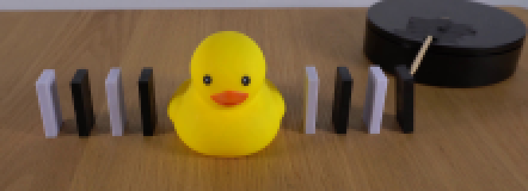
视觉工具实际返回图片 3
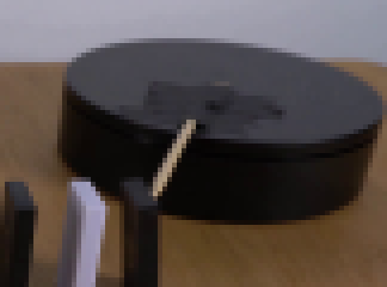
视觉工具实际返回图片 4
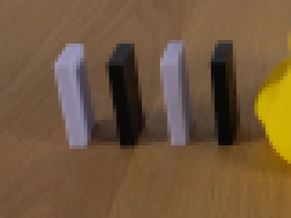
视觉工具实际返回图片 5
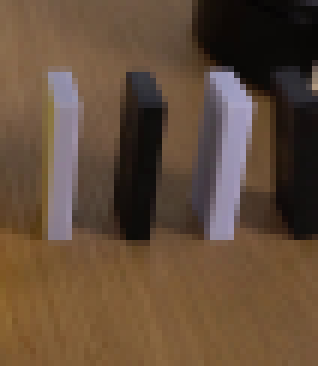
视觉工具实际返回图片 6
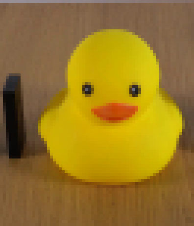
视觉工具实际返回图片 7
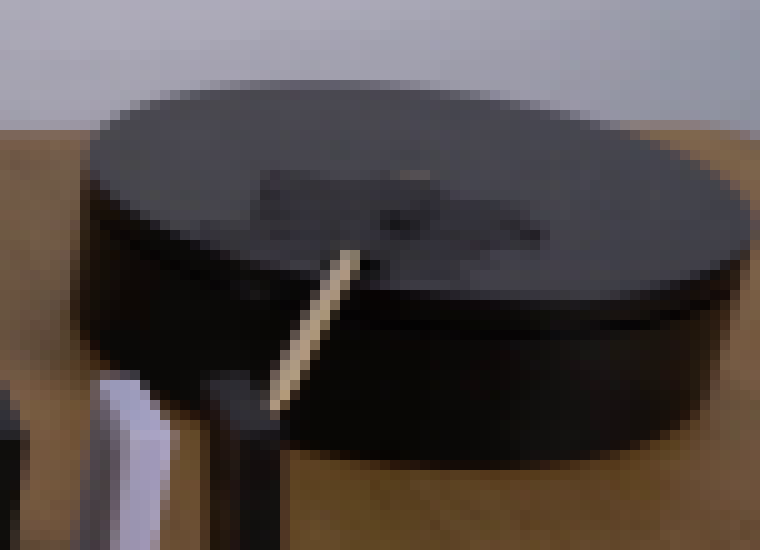
视觉工具实际返回图片 8
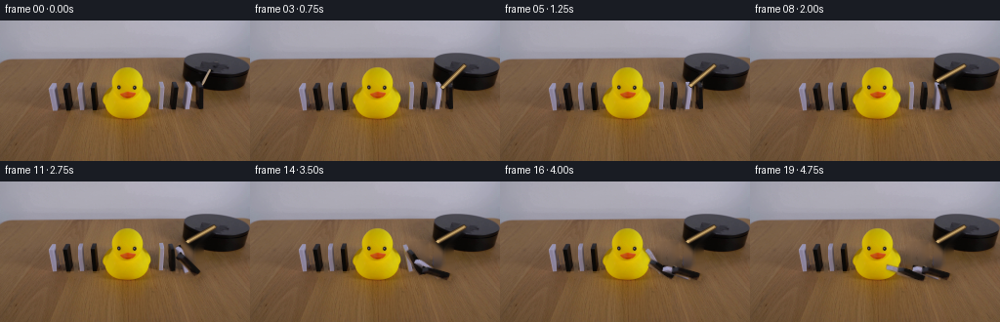
视觉工具实际返回图片 9
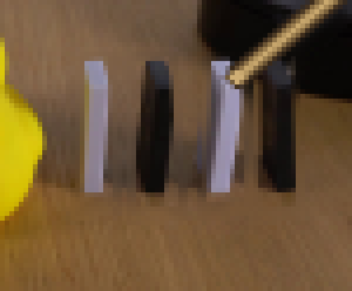
视觉工具实际返回图片 10
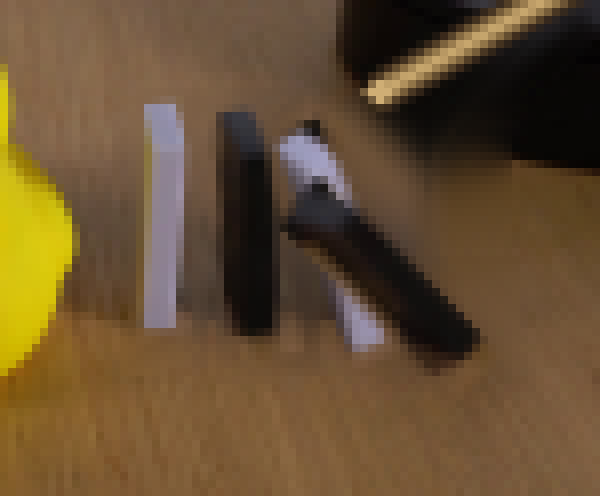
视觉工具实际返回图片 11
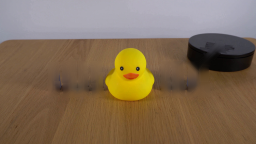
视觉工具实际返回图片 12
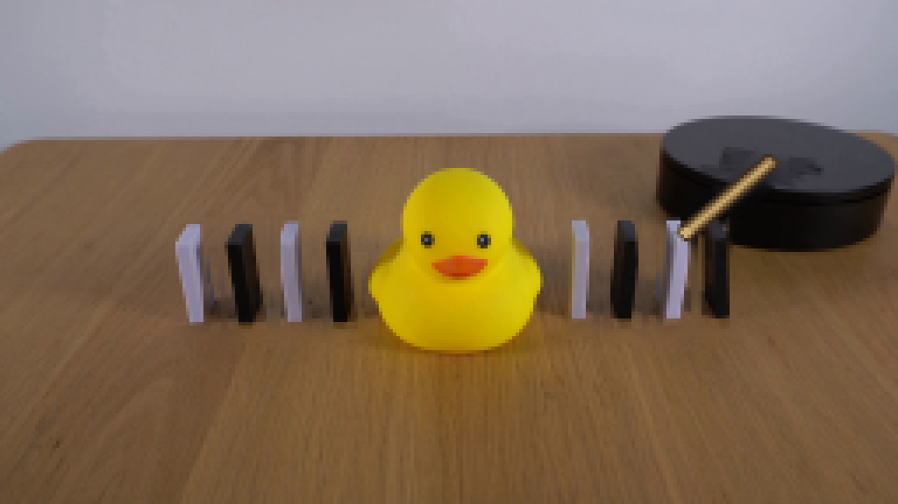
视觉工具实际返回图片 13
视觉工具实际返回图片 14
视觉工具实际返回图片 15
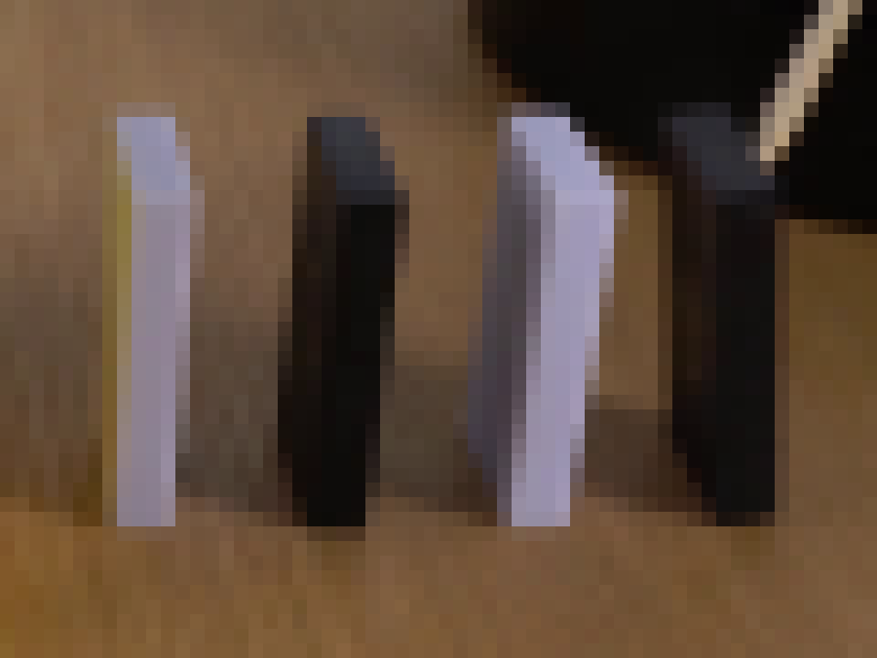
视觉工具实际返回图片 16
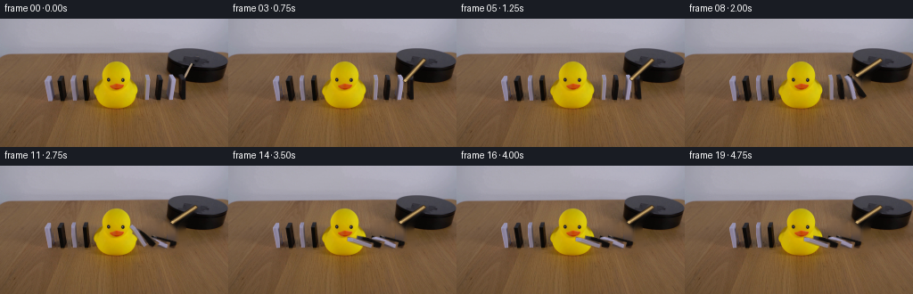
视觉工具实际返回图片 17
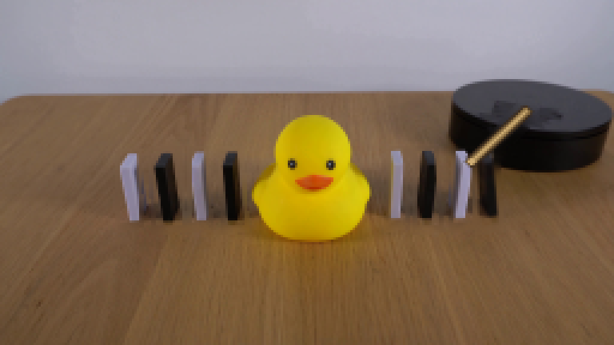
视觉工具实际返回图片 18
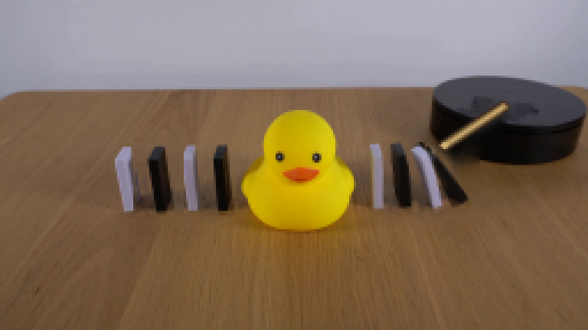
视觉工具实际返回图片 19
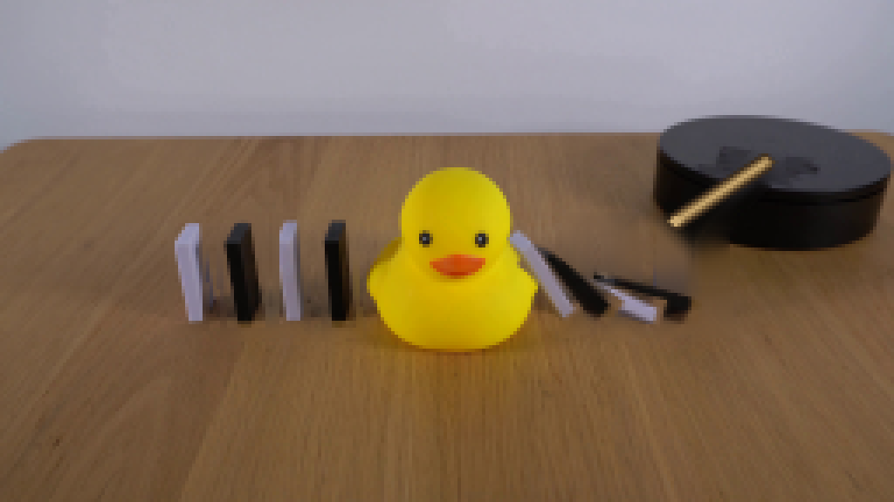
视觉工具实际返回图片 20
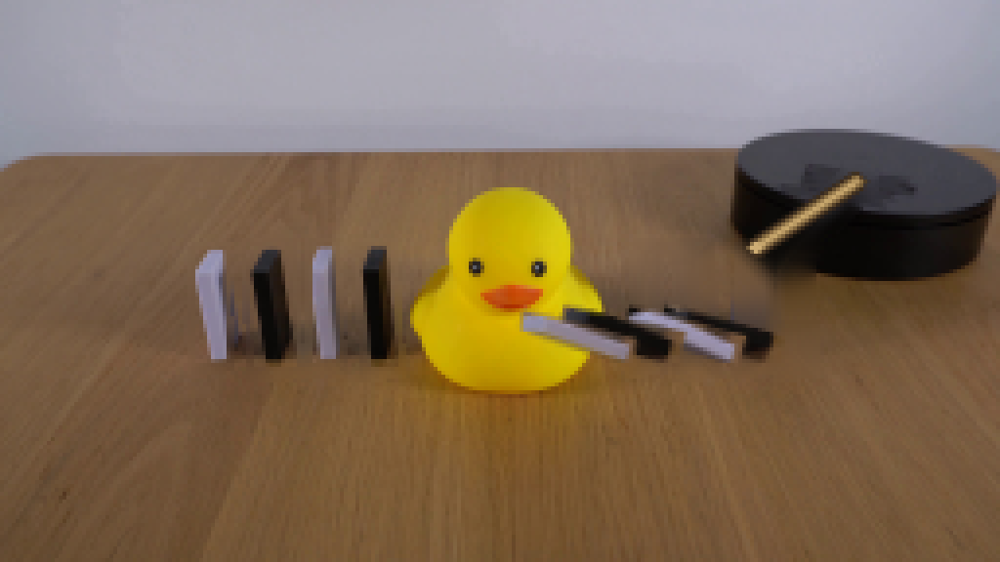
保存候选 2 份；完成命令 35 次；可验证图片返回 20 张。原始 API 响应与完整日志保留在本地。